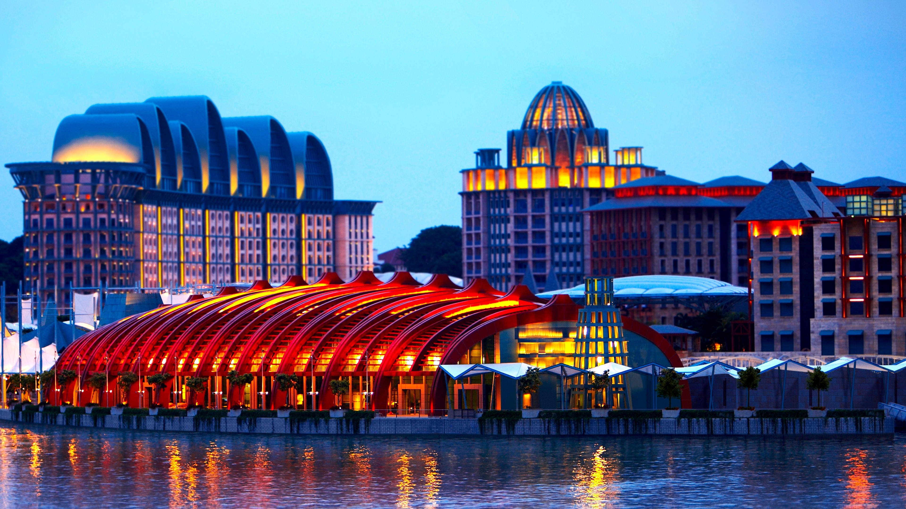
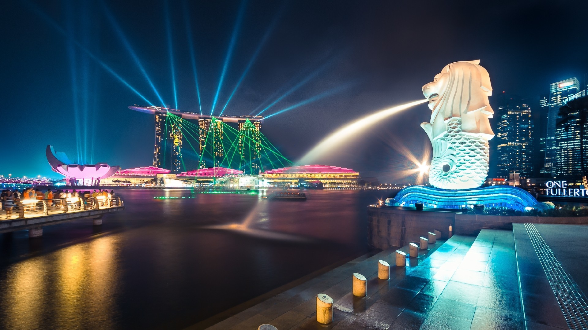
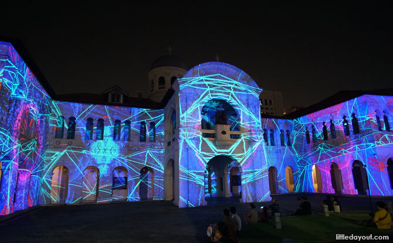
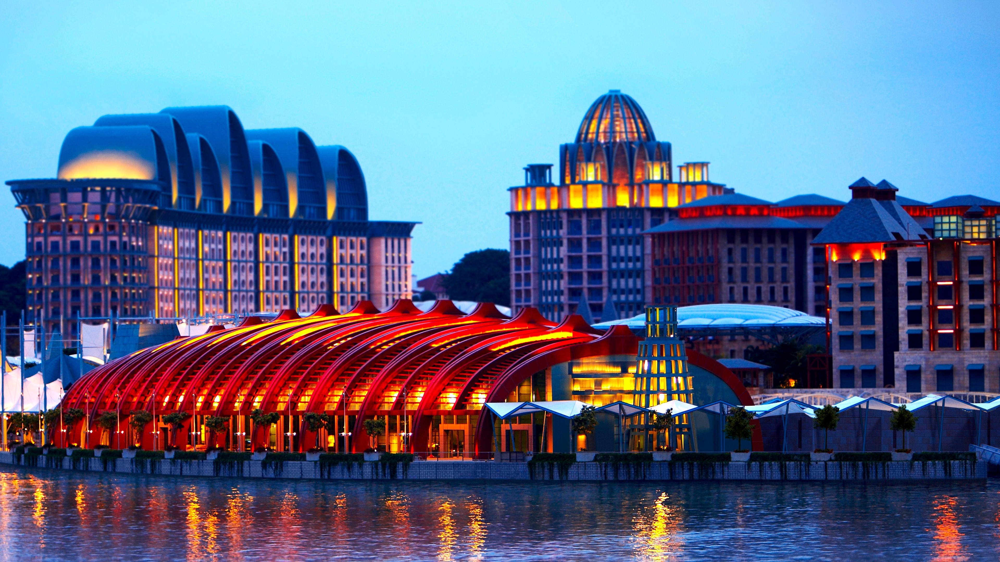
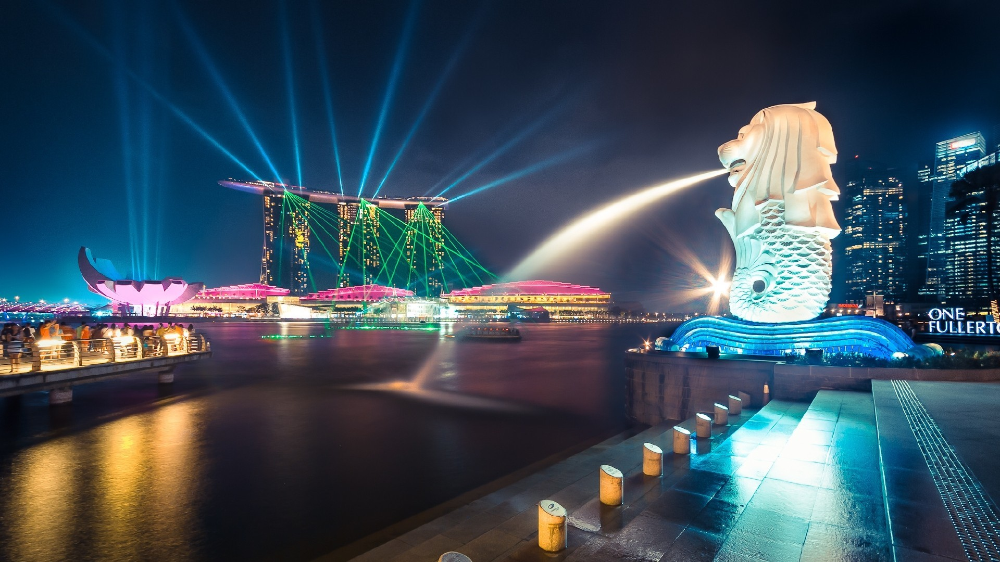
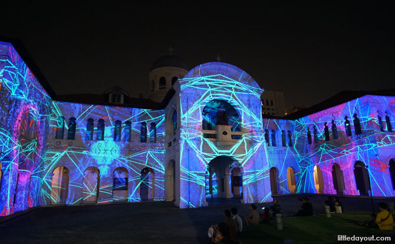
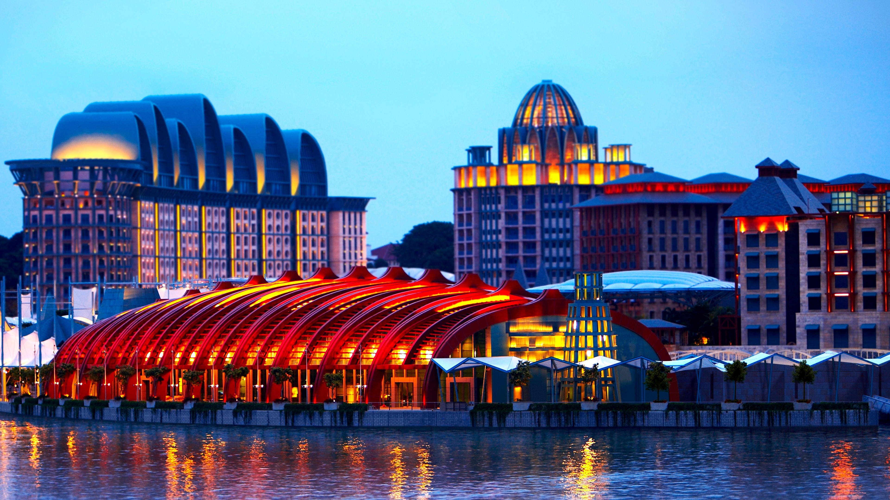
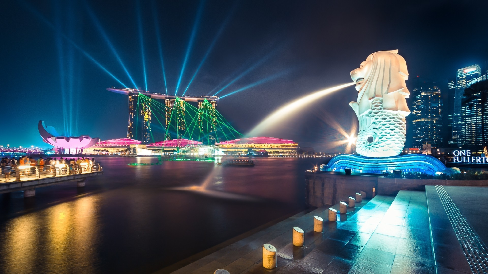
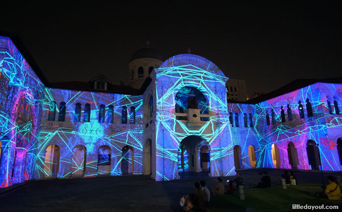
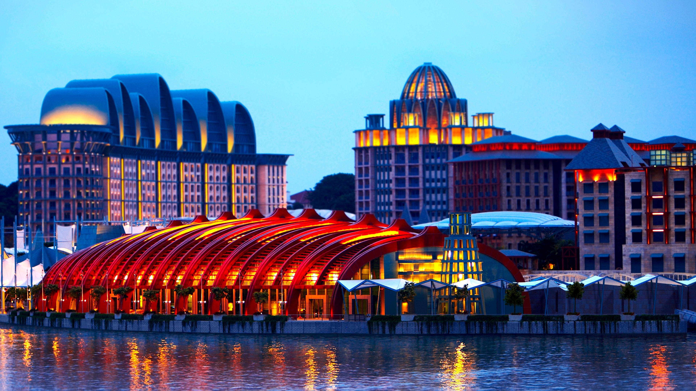
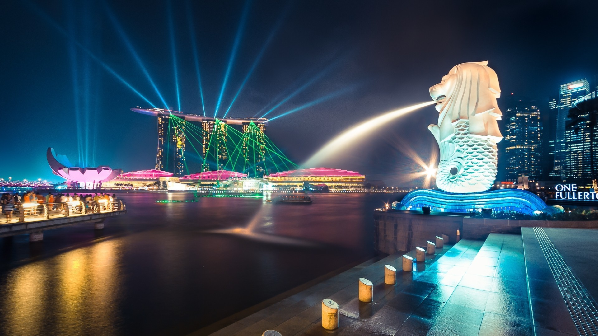
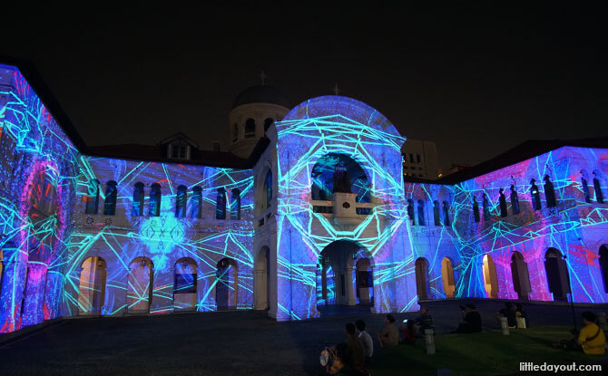
Singapore has one of the most beautiful nighttime skylines in the world; what better way to see it than from 165 meters above the ground? The Singapore Flyer is an observation-deck ferris wheel, taking 32 minutes for one full circle. See the city lights from the best view in the country! The Flyer also has an exhibit full of colors and interactive activities teaching the history of the Flyer and how it came to be. Before you head on up the wheel, have a quick bite of quality Singaporean food at the food court. For a perfect evening of riding The Flyer, exploring the Marina Bay and the Merlion.
Running along the Marina Bay are 250 acres of natural parks and gardens, a beautiful switch of scenery from Singapore’s concrete jungle. Stroll around the massive gardens in the cooler weather at night. Watch the synchronized lights and music show at the Supertree Grove under the stars. On foot, you can see the glass conservatories- The Flower Dome and The Cloud Dome- housing fauna and flora that can only survive in the contained climates. The Gardens itself opens til 2 am, while the Flower Dome and Cloud Forest open until 9pm daily. The Gardens at the Bay are a must-see on your Singapore adventure!
This is definitely a way to see Singapore at night in style. Board an air conditioned luxurious bus and get served gourmet local food as you tour the city, passing major attractions including the Singapore Flyer, Merlion and Marina Bay Sands. Soon after your main course, you’ll be dropped off at Gardens by the Bay for the evening light show. Back on board, a delicious desert will be waiting for you as you enjoy the rest of the evening seeing Singapore’s sights, finishing the tour by passing the Fountain of Wealth.
The Clarke Quay is bustling with bars, restaurants, and pubs all situated beside the river. The variety of things to do on the Quay is vast, from visiting museums to the Reverse Bungee ride. However, what draws the most tourists and locals alike is the club scene at Clarke Quay. When the sun sets the party animals come out and gather at one of the dozens of clubs that line the streets. For cabaret-style Chinese music, try Shanghai Dolly. For house and techno music, try Headquarters by the Council. Music and dance lovers will not be disappointed by Singapore’s Clarke Quay.
Sentosa Island, consider the “State of Fun” is a major tourist hub with a tonne of activities. If you only have one night, this tour that will give you a great overview of the island. You’ll first head to Mt Fuber and catch a cable car ride providing panoramic views of Singapore. At Sentosa, you’ll have another opportunity to take photos in Sky Tower before heading to SEA Aquarium where over 100,000 species of fish are featured. To cap off an exciting night out, watch the popular light show “Wings of Time” orchestrated by displays of lasers, water and fire.
For a night of free entertainment under the stars, head down to Marina Bay South to see the Spectra show. “A light and water display like no other”, Spectra draws in crowds every night who want to watch the show and listen to the symphonic music. It’s free to the public, but there are lots of restaurants and bars nearby you can visit when it’s done. Feel free to stroll around the marina and take in the ambiance of Singapore’s beautiful nightlife. If you really want to capture some amazing photos, join a photography tour.